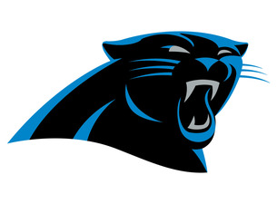

The Carolina Panthers are my favorite NFL team. They are based out of Charlotte, North Carolina, where I am from and are exciting to watch and pull for. The team was founded in 1995 by Jerry Richardson, who is selling the team right now. Some of the most prominet players on the team include Quaterback Cam Newton, Linebacker Luke Kuechly and Running Back Christian Mcaffrey. Hopefully you'll become a fan for life after checking this site out!
| Season(Year) | 2003 | 2015 | 2017 |
|---|---|---|---|
| Number of Wins | 11 | 15 | 11 |
| Number of Losses | 5 | 1 | 5 |
The Carolina Panthers have enjoyed relative success over their 23 year history, appearing in two Super Bowls although they could not win either. Their best season was arguably 2015, when QB Cam Newton won the league's Most valuable Player award while leading the team to a 15-0 start and an eventual berth in the Super Bowl. Even though the Panthers were considered the favorites to win the game, the Denver broncos defense smothered Newton and gave the Broncos a win , 24-14.
There are 53 players on each NFL team, and while I love all the current Panthers players, I have three favorites:
For more information on the Carolina Panthers and other NFL teams, click here: This NFL Website